NOCK TIMMERHUS
Koncept framtaget i kursen Grafisk produktion. Identiteten bygger på en naturinspirerad färgpalett som speglar trä, skog och hantverk.
Logotypen är framtagen i Illustrator och den grafiska manualen är sammanställd i InDesign.

Koncept framtaget i kursen Grafisk produktion. Identiteten bygger på en naturinspirerad färgpalett som speglar trä, skog och hantverk.
Logotypen är framtagen i Illustrator och den grafiska manualen är sammanställd i InDesign.